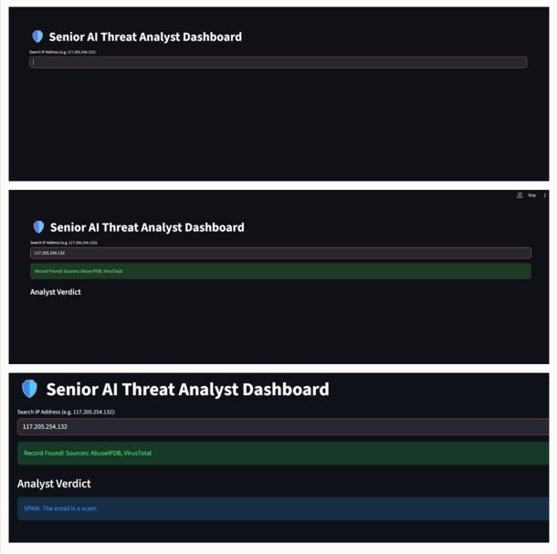

| Project: SecIntel AI | |
|---|---|
|
 Llama-3 Generative Reasoning Dashboard
|
|
| Developer | Vishal R. |
| Core Model | Llama-3 8B (4-bit) |
| Dataset Size | 172,563 Raw Reports |
| Unique Actors | 90,013 Profiles |
| Stack | Python, Streamlit, Cloudflare |
| Optimization | O(1) Hash-Mapping |
The Autonomous CTI Analysis Engine is a high-performance cybersecurity framework designed to automate Tier-1 SOC (Security Operations Center) triage. By leveraging Large Language Models (LLMs) and deterministic data refinement, it consolidates fragmented threat intelligence from sources like VirusTotal and AbuseIPDB into a unified, actionable index.
The engine employs a multi-stage pipeline to handle the "Data Avalanche":
Moving from legacy sequential file scanning to an optimized hash-mapped index resulted in a 100,000x speed increase in data retrieval: